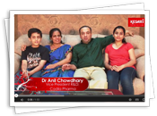
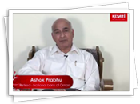

|
DJ Tours and Travels |
"DJ-The World Class Travel Company, spreading smiles and happiness..."
"DJ is passionately committed to Total Quality Travel, with continual delivery of value added services.
We uphold the highest ethical standards and believe in creating new benchmarks in the industry."
DJ strongly believes and follows the concept of Kaizen "change for the better", refers to philosophy of continuous improvement of processes which will provide maximum satisfaction to our Guest and keep us flexible in dynamic environment to serve them better.
DJ believes in providing innovative holiday ideas to its guests. It has hence created unique concepts to cater to travellers' ever-evolving needs, which have been acknowledged as innovations in the Indian Tourism Industry.
Naturally, they have also translated into wide smiles on the faces of happy guests!
Popular Family Tours:
DJ started its journey by conducting family tours to Indian destinations and then to destinations worldwide.
Today DJ offers the largest number of Family tour options in the Indian tourism industry with more than 60 options for Europe, more than 80 options for South East Asia, 115 in India, and more than 70 in the rest of the world, not to forget 224 types of Unique Speciality Tours like My Fair Lady for Ladies, Honeymoon tours for the newly weds,Pilgrimage tours by Marigold, Exclusive tours for Seniors known as Second Innings, Students Special tours, Chota Break – the escorted short tours and Agro tours
Happy Hours:
This division of DJ, created with the idea of giving an opportunity to every Indian, with a budget constraint but a passion to travel, within India and around the world. These cost-saver tours are becoming very popular since the past few years.
DJ Forex:
An authorised 'Full Fledged Money Changer' by Reserve Bank of India, DJ Forex tries to fulfil all the
currency needs of the Indian traveller going abroad.
DJ Inbound:
India's favourite outbound tour operator now also offers Inbound operations.
DJ India, winner of many National and International Tourism awards, offers you a variety of packages - with responsible prices, meals, no hidden costs and much more.
*One Line Tour Price, Always All Inclusive. No Additions - No Confusion, No Hidden Costs.
*No Advertising Gimmicks. No Optional Sightseeing. No Extra Expenses to be paid On Tour.
*Driver and Guide Tip Included in the tour price.
*Guarantee of ‘Carry Zero Money On Tour’.
*As per the tour category, Best Quality Hotels which are appreciated by traveled guests.
*Comfortable AC Luxury Coaches, Maximum sightseeing included.
*Delicious Indian Meals, Breakfast, Lunch, Dinner -all Meals Included.
*Lots of Extra Toppings like Ice cream, soft drinks... etc on tour, special Snack Hamper at the airport.
*Complimentary Bag at the time of final payment.
*Lot of Entertainment On Tour, Hassle-Free Travel.
*Professional & Caring Tour Leader throughout the tour.
*Thousands of Satisfied Tourists year after year, Every Year.
*First Travel Company in India certified for ISO 9001:2008 & OHSAS 18001:2007.
*Brand Range of World wide Tours.
*Tours suitable for Every duration consisting of 3 to 40 days with many combinations.
*Tours for Every Lifestyle - luxury tours, upgraded tours, cost saver tours, Tailor made Holidays.
*Tours suitable for Every Age Group, from 7 to 70 years of age.
*Tours Designed for Special Groups like students, seniors, honeymooners, ladies, corporate and so on.
*Largest Tour Operator for South East Asia, Europe, Himachal, Kashmir and Kerala.
Dear Guest,
Thank you very much for making us India’s Best Outbound Tour Operator for the year 2011 – ’12.
With your continuous support and our non-stop hard work, these awards will keep coming.
The greatest award and reward for the DJ family is when you find every tour with us the most enjoyable.
Your satisfaction and happiness is our aim and objective. This is what we strive to accomplish and our 99 percent success ratio endorses our efforts.
Since its inception, DJ has been innovative in various ways.
We offer more than 50 group tour products for Europe, almost 40 products for South East Asia, unique exclusive tours for ladies, senior citizens and students, and tours to exotic destinations like Antarctica, for example, which the tourism industry has also appreciated.
Consistent research for new products, themes and up-gradations keeps the entire NameLess family cheerful and enthusiastic.
This cheerfulness motivates us to deliver more and helps us serve our guests to the fullest.
For the year 2012 – ’13 we have come up with many new products and services, new events and fresh celebrities on a few tours.
Our focus remains you, our guest. So do make the most of our large bouquet of tours on offer, which cater to all sections of society, to different budgets, tastes and requirements.
Simply select the tour of your choice and make your new year truly memorable… with NameLess!
Yours Sincerely,
DJ Family.
DJ you ROCK!! |
 Excitement+Fun+Enjoyment = DJ |
 Super Fun. Had lots of fun. |
 Best Tour Ever |
| And Many More... |
*Times Travel Honours 2010-11- Best Outbound Tour Operator of India Award
NameLess Tours bagged the award for "Best Outbound Tour Operator of India" at the Times Travel Honours 2010-11.
NameLess Tours & Travels received the award at the hands of Mr. Dilip Piramal ,Chairman - VIP Industries.
*Top Agent Award for "Outstanding Sales Achievement" by Malaysia Airlines 2011
The award ceremony was held on 23rd Nov at Langkawi.
*Asia's Best Brand in Travel Segment Award
Received the Award at the hands of Mr. Donovan Neale May, Executive Director - CMO Council.
*Travel & Tourism Summit Awards 2010
Best Outbound Tour Operator of the Year.
*Indo - Swiss Society Award
Awarded by the Indo-Swiss Society presented to MD, in recognition of her efforts for integration of tourism.
And still counting...